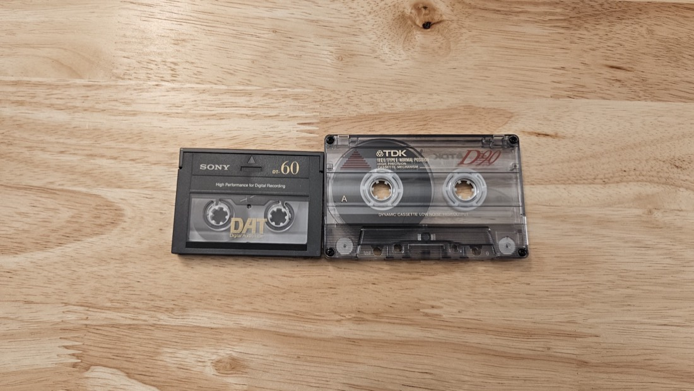

名偵探柯南 · 讀者研究
柯南的世界，
到底發生過哪些事？
這是一份《名偵探柯南》的時間表。但它跟一般的時間表不一樣——它會老實告訴你，哪些是漫畫真的畫出來的，哪些只是大家猜的，還有哪些你可以自己去翻書驗證。
先看懂這兩排記號
「有多確定」和「查不查得到」是兩回事
這是這份年表最重要的設計。以前我們把兩件事混在一起講，結果會誤導人——
一件事情漫畫有沒有明講，跟你能不能自己翻書查證，其實是兩個不同的問題。所以現在每一條都有兩個記號。
因為「我知道」「我猜」「我聽別人說」是三件不同的事。
以前這份年表把「漫畫 30 集 File 4–7」和「某個資料站說有這件事」標成同一級——那對讀的人不公平。現在你可以一眼看出，哪些是我敢請你去翻書對證的。
最精彩的一段
鏡子上的死前留言
十七年前，將棋棋士羽田浩司在美國一間飯店被殺。他快死的時候，用剪刀在鏡子上動了手腳，留下一個給後人的暗號。
鏡子上原本寫著英文 PUT ON MASCARA（塗睫毛膏）。他剪掉了四個字母——然後把鏡子泡進水槽、開著水龍頭，讓壞人來不及清理現場。
很多資料寫成「他剪下
UMASCARA、留下 POTON」——剛好講反了，而且 POTON 這個字根本湊不出來（多了一個 O）。
正確是：剪掉 PTON 這 4 個字母，留下 UMASCARA 這 8 個。
為什麼這個暗號這麼厲害？
因為它故意設計成會被猜錯一次。
剩下的 8 個字母可以排成 ASACA RUM——看起來像在指認兇手「淺香」和「蘭姆」。警察和黑衣組織都這樣讀，所以追錯了十七年。
但後來工藤優作（新一的爸爸）想到：如果不拆成兩個字，連起來讀呢？就變成 CARASUMA——烏丸，黑衣組織真正的老大。
羽田浩司要指的，從頭到尾就不是動手的人，而是躲在最後面的那個人。他知道自己來不及說完，所以把答案藏在一個「會先被讀錯」的字謎裡。
案發現場少了一樣東西
那顆不見的棋子叫「角行」

羽田浩司是職業將棋棋士。將棋是日本的棋，跟西洋棋長得不一樣——棋子是五角形的小木片，上面寫漢字。
他隨身帶著一顆當幸運符的棋子，叫做角行。命案之後，這顆棋子不見了。後來出現在另一個人手上，成為串起整件案子的線索之一。
英文資料常把角行翻成
bishop（西洋棋的主教），因為兩者走法都是斜線。但它們是不同的棋——之前的版本直接照英文寫成「主教」，是錯的。日文原作寫的就是角行。
時間有多長
這個故事往回追了 98 年
柯南的故事「現在」其實還不到一年——新一變小之後，漫畫裡連一個生日都還沒過完。但故事背後的往事，最遠可以追到將近一百年前。
Amanda 說「大約 50 年前見過蘭姆」——但她說這句話的時候，是在「17 年前」。所以離現在是 50 + 17 = 67 年前。 中文網路上不少年表直接寫成 50 年前，少算了 17 年。
一個奇怪的現象
科技一直在變，但大家都沒變老
《名偵探柯南》從 1994 年連載到現在，已經三十多年了。早期的案子裡出現軟碟片、傳真機；最近的案子裡大家都拿智慧型手機。
可是角色一個都沒長大。新一還是高中一年級，柯南還是小學一年級。
這叫做浮動時間軸——故事裡的時間幾乎不前進，但畫出來的世界會跟著現實更新。所以年表裡所有的「X 年前」，都是相對於那個幾乎不動的「現在」。
誰是誰的人
四個單位，都派人混進了組織
柯南後期的故事，其實是一場間諜戰。黑衣組織裡有好幾個人是別的單位派進去的臥底——他們有兩個名字、兩個身分，而且彼此常常不知道對方也是自己人。
諸伏景光死的時候，赤井秀一想救他、還亮出自己 FBI 的身分。結果降谷零跑上樓的腳步聲讓景光以為殺手來了，趁機開槍自盡。 赤井為了保住臥底身分，撿起槍裝成兇手——從此降谷零恨了赤井很多年。
害死好朋友的那個腳步聲，其實是降谷零自己的。
查證後新增
警察學校的五個人，走了三個
降谷零、諸伏景光、松田陣平、萩原研二、伊達航，五個人在警察學校同期。後來他們之中有三個因公殉職。
其中萩原研二和松田陣平，都死在 11 月 7 日——相隔四年，同一個日子，都跟炸彈有關。
變小的原因
APTX 4869 到底做了什麼？
新一被灌的那顆藥叫 APTX 4869。組織拿它當驗不出來的毒藥用——吃下去的人會死，解剖也查不到藥的痕跡。但它偶爾會出意外：不是把人殺死，而是把人變回小孩。

這款藥原本是宮野志保的爸媽在研究的，目標是讓細胞變年輕。他們給它取的暱稱是「銀色子彈」。後來他們死於研究室火災，志保才靠殘留的資料把它重新做出來。
志保的媽媽宮野艾蓮娜，在女兒還很小的時候，就先錄好了二十年份的生日祝福，裝在四捲卡帶裡。
而在志保十八歲的那一捲上，她講的不是祝福——她問女兒：如果繼續做這個研究，妳會不會後悔？
另一個被變小的人
倫敦的橋上，世良瑪麗也中了同一種藥
世良真純的媽媽世良瑪麗，被人用「你失蹤的丈夫要見你」的理由騙到這座橋上。等在那裡的其實是苦艾酒喬裝的伏擊。
瑪麗中了 APTX 4869、掉進泰晤士河，但活了下來——然後縮成國中生的樣子。
幾個月後，她在電視上看倫敦的網球比賽轉播，聽見一個小男孩自稱「福爾摩斯的門徒」——那是十年前工藤新一對她講過的、一模一樣的話。她就這樣認出了柯南。
完整年表
從 98 年前到現在
下面可以自己切換。想只看「我敢請你去翻書對證」的部分，就按 📖 只看有話數的。
沒有符合的條目。
最後
為什麼這份年表要這麼囉唆？
五成以上是推算的
整份年表 50 條，只有 19 條是漫畫明講的。其他大多是從角色年齡、學年、對白裡算出來的。
真正能翻書的更少
19 條「確定」裡，只有 9 條寫得出第幾集第幾話。剩下的我沒看過原文，只能標成「轉述」。
算錯會一路傳下去
像「50 年前 vs 67 年前」那個少算 17 年的錯，一旦被抄進別的網站，就會一直錯下去。
不知道就說不知道
有 10 條查不到話數，就老實寫「待補」。用猜的填進去，比空著更糟糕。